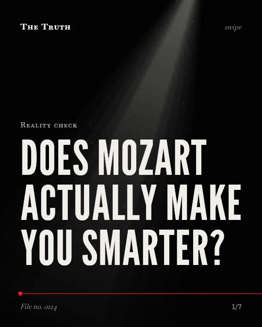

Reality check
Does Mozart actually make you smarter?

Mozart does not increase your IQ.
While some meta-analyses show a small improvement in cognitive performance, listening to Mozart has no established benefit for epilepsy or spatial reasoning tasks.
Established. Several studies combined, or official data. The evidence is mixed.
What the research found
Listening to Mozart K. 448 for brief periods temporarily enhanced performance on spatial tasks, but this finding led to the conclusion that it could raise children's IQ.
“The logic leaped from a laboratory result showing a transient boost in spatial scores after listening to Mozart to the conclusion that listening to Mozart could raise children's IQ.”
Experiment, 2000. Hetland, Journal of Aesthetic Education.
Listening to Mozart's music for ten minutes showed limited support for an enhancing effect on performance accuracy in a pencil-and-paper maze task.
“Limited support for the previously obtained enhancing effect of listening to Mozart's music was revealed in measures of performance accuracy on this spatial task”
Experiment, 1997. Wilson & Brown, The Journal of Psychology.
The nature of the Mozart effect is the Mozart rhythm effect, and different music may have quite different to opposite effects.
“These findings suggest that the nature of Mozart effect is the Mozart rhythm effect, and indicate that different music may have quite different to opposite effects.”
Experiment, 2016. Xing et al., Scientific Reports.
Listening to Mozart KV448 or other musical stimuli does not appear to have any beneficial effect on epilepsy.
“In all, listening to music, let alone a specific kind of sonata, does not appear to have any beneficial effect on epilepsy.”
Meta-analysis, 2023. Oberleiter & Pietschnig, Scientific Reports.
After removing outliers, classical music significantly improves cognitive performance with a small overall effect size of Hedges’g = 0.36, p < 0.001.
“结果发现：剔除异常值后, 古典音乐能显著改善认知表现, 整体效果量较小(Hedges’g = 0.36, p < 0.001)”
Meta-analysis, 2023. Chen et al., Advances in Psychological Science.
The evidence is mixed.
Some studies show small gains in specific tasks like mazes. Other research finds no significant effects on medical conditions. Many claims rely on brief laboratory results rather than long-term change.
Transient effects are not permanent growth.
That may be why a temporary boost in focus during a task feels like a permanent cognitive upgrade. The data suggests these effects are often brief and context-specific.
This part is our reading of the evidence, not a finding.
A study session in a quiet room.
You put on your headphones to focus on a difficult assignment. You expect the music to sharpen your mind, but the change is only for the minutes you listen.
The honest summary
The evidence is mixed, showing small cognitive gains in some contexts but failing to consistently replicate significant benefits for spatial reasoning or medical conditions.
The reliability of the Mozart effect is undermined by low primary study power, non-transparent reporting, and the fact that many claims were based on transient laboratory results rather than long-term IQ gains.
Are you seeking a shortcut to intelligence?
Sources
- Sandra Oberleiter, Jakob Pietschnig (2023). Unfounded authority, underpowered studies, and non-transparent reporting perpetuate the Mozart effect myth: a multiverse meta-analysis. Scientific Reports. Meta-analysis, cited 18 times.
- Lijun Chen, Meilin HUANG, Xiaoliu JIANG et al. (2023). Does classical music make you smarter? A meta-analysis based on generalized Mozart effect. Advances in Psychological Science. Meta-analysis, cited 2 times.
- Lois Hetland (2000). Listening to Music Enhances Spatial-Temporal Reasoning: Evidence for the "Mozart Effect". Journal of Aesthetic Education. Experiment, cited 257 times.
- Thomas L. Wilson, Tina L. Brown (1997). Reexamination of the Effect of Mozart's Music on Spatial-Task Performance. The Journal of Psychology. Experiment, cited 93 times.
- Yingshou Xing, Yang Xia, Keith Maurice Kendrick et al. (2016). Mozart, Mozart Rhythm and Retrograde Mozart Effects: Evidences from Behaviours and Neurobiology Bases. Scientific Reports. Experiment, cited 66 times.
Also read for this file, not quoted
- Platz et al. (2014). The influence of deliberate practice on musical achievement: a meta-analysis.
This file was researched and drafted by software, then checked by rules a model cannot talk its way around: each quote above was matched word for word against the paper, and every number had to appear in it. How files are made.